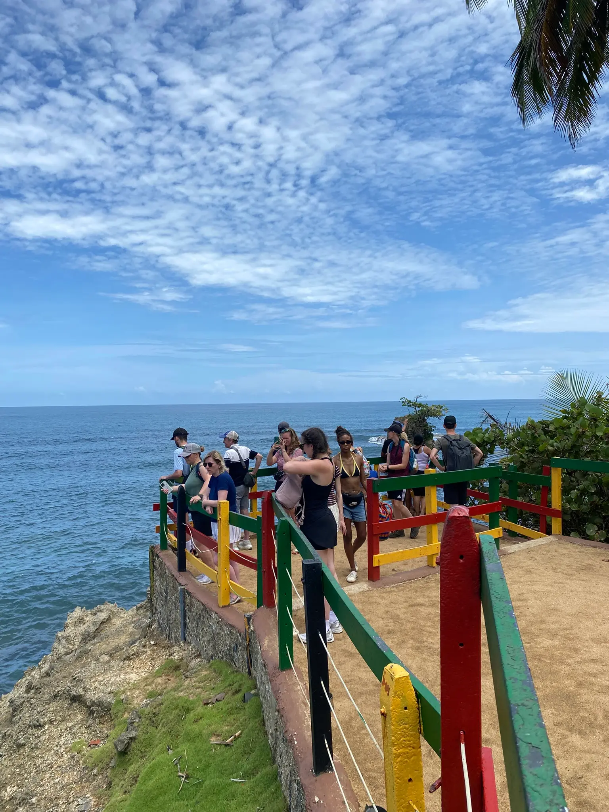

Caribe Sur · Costa Rica
Un recorrido por la naturaleza, la historia y la cultura del Caribe Sur
Descubre 19 destinos donde la naturaleza, la historia y la cultura se unen en una experiencia única.


19destinos en la ruta
3zonas, de Cahuita a Gandoca
16con ingreso libre o contribución voluntaria
5con accesos para personas con discapacidad
¿Qué te gustaría vivir?
Empieza por lo que más te llama la atención.
La ruta, de norte a sur
Los destinos están agrupados por zona para que aproveches mejor cada día. El número es el mismo que verás en el mapa.
Zona 1
Cahuita
Pueblo pesquero con arrecife de coral, parque nacional y la música del calipso.
Zona 2
Puerto Viejo y Cocles
El corazón afrocaribeño de la ruta, con sus playas y sus primeros caminos.
Zona 3
Punta Uva, Manzanillo y Gandoca
Refugio de vida silvestre, comunidades costeras y la laguna cerca de la frontera con Panamá.
Prepara tu visita
Consulta cómo llegar, compara horarios y revisa qué lugares necesitan registro previo o guía local.
Planifica tu visita